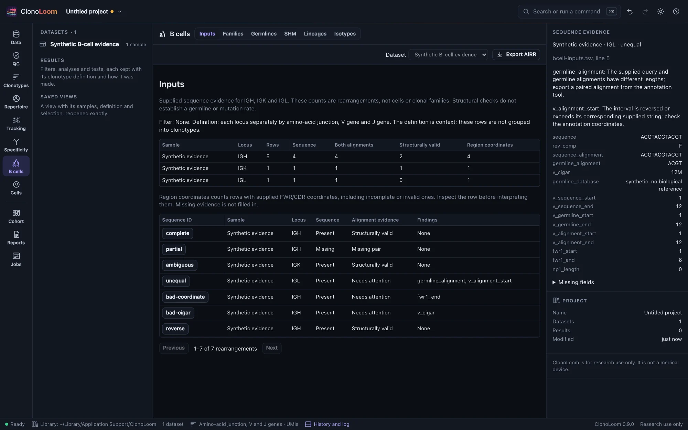
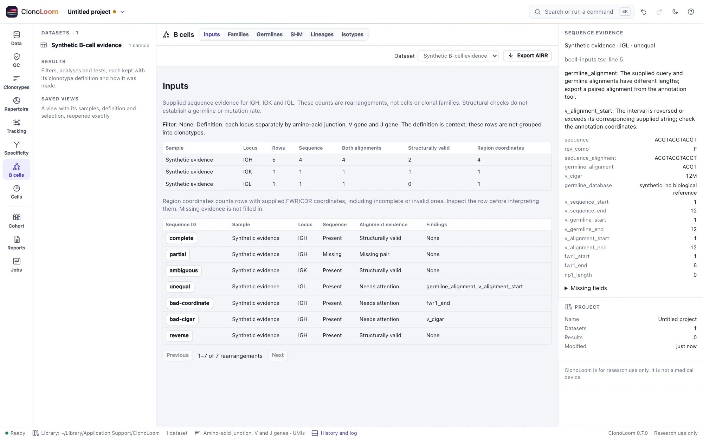
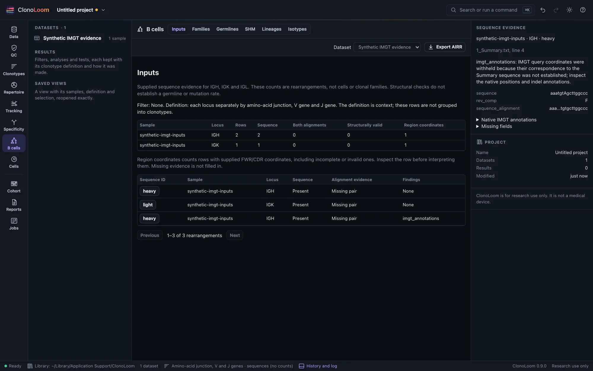
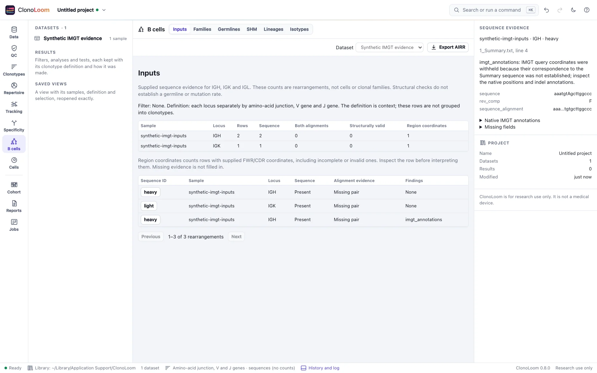
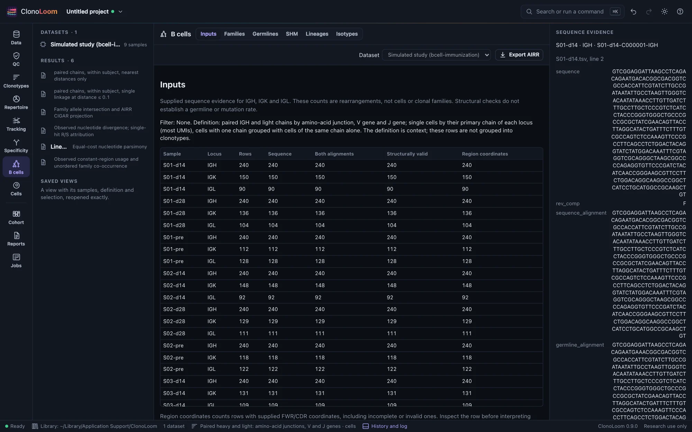
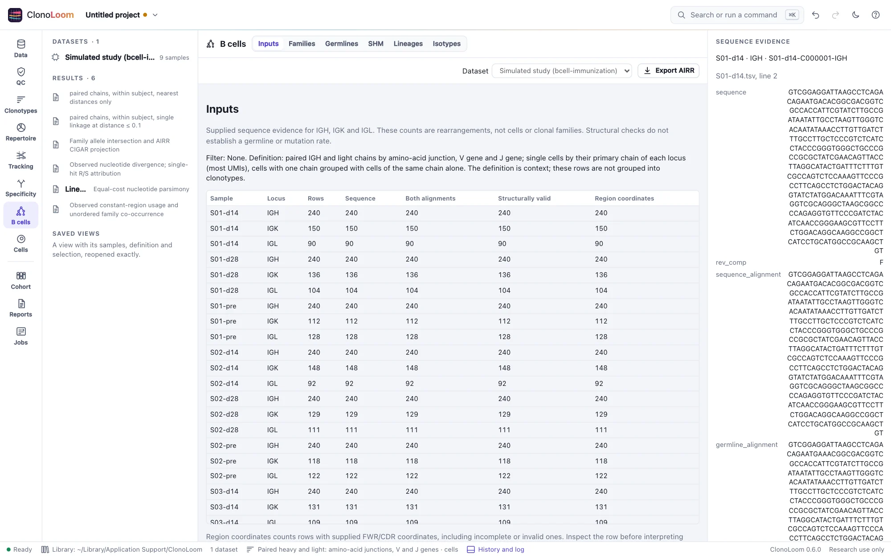

B-cell sequence evidence
B cells → Inputs shows what the annotation pipeline supplied, what is missing and which structural checks need attention.
Inspect the inputs


Open an AIRR rearrangement table, choose B cells, then select a sequence ID. The inspector shows its source file and line, original sequence, alignments, orientation, coordinates and findings. Repeated sequence IDs from different files remain separate.
The summary counts IGH, IGK and IGL rearrangements under the active QC filter. These are not counts of cells or clonal families. The clonotype definition is shown for context; it does not group these input rows. Change the filter in QC.
Presence and validity
- Sequence: the query sequence was supplied.
- Both alignments: query and germline alignment strings were supplied.
- Structurally valid: both strings are present and the evidence checks found no inconsistency. This does not establish a biological germline, IMGT numbering or a mutation rate.
- Region coordinates: at least one FWR/CDR endpoint was supplied. Inspect it for incomplete or invalid intervals.
Missing evidence is not filled in. Unequal alignments, invalid coordinates and malformed CIGARs remain visible with findings. The original junctions can still support repertoire analysis. ClonoLoom does not pad the strings, realign them or reverse an already oriented alignment.
Try the synthetic example
In Example data, open Synthetic B-cell sequence evidence. Follow its steps to compare a consistent artificial annotation with unequal alignments. These short sequences illustrate validation; they are not biological receptors. The example is generated locally and works offline.
IMGT/HighV-QUEST tables


Open an extracted output folder containing 1_Summary.txt, 2_IMGT-gapped-nt-sequences.txt, 3_Nt-sequences.txt and 6_Junction.txt, or select those four files together. Gzip is supported. The optional 11_Parameters.txt retains annotation settings. Tables are joined by sequence number and ID, even when their rows are reordered. Incomplete or conflicting bundles are rejected.
IMGT already orients the Summary sequence. ClonoLoom preserves it and the IMGT-gapped query, and retains the submitted strand in Native IMGT annotations. Query coordinates are mapped only when an uncorrected region matches the Summary sequence. Insertion/deletion correction can prevent that mapping; original positions remain inspectable. A gapped query alone supplies no germline alignment.
Try Synthetic IMGT annotation tables in Example data. Its steps compare a reverse submission with a corrected insertion. These artificial cases check the documented format, not IMGT's biological accuracy. The Data inspector lists every source fingerprint and the supplied Parameters text.
See the IMGT output documentation (Brochet et al. 2008, doi:10.1093/nar/gkn316). Extract archives before opening them; mutation-statistics reports and Excel workbooks are outside this reader.
An immunization study with known truth


Wave 5 adds the offline artificial B-cell immunization example. Its guided steps show three subjects at days −7, 14 and 28, then inspect a supplied sequence and ancestor alignment. Each cell has one heavy and one kappa or lambda chain. The model records twelve families per subject, seven states per family, every mutation event, fixed isotype transitions and sampled cell assignments in truth/, which is excluded when opening the data.
Calls containing SIM are fictional. The coding sequences, region coordinates, uniform mutation proposals and fixed trees form a simple benchmark, not a calibrated biological SHM or affinity model. Back-mutations make accumulated events differ from net differences to the ancestor. No molecule counts are invented. See the simulation guide for parameters, truth formats, references and limits. Clonal families are available in Families; D-masked germlines are available for supported AIRR CIGAR evidence. Lineage trees analyze shared V/J panels from those saved germlines.
Export the evidence
Export AIRR writes the retained evidence beside the existing rearrangement fields, with source and license notes. Invalid supplied values remain invalid in the export so they can be investigated. Correct them at the annotation source before later sequence analysis.
Method and limits
Checks follow the AIRR Rearrangement schema 2.0 (Vander Heiden et al. 2018, Frontiers in Immunology 9:2206, doi:10.3389/fimmu.2018.02206). Inputs does not reconstruct germlines or measure mutation. Germlines, SHM and Lineages are separate analyses with explicit evidence requirements.
Continue to Clonal families to inspect nearest distances and choose an explicit threshold.